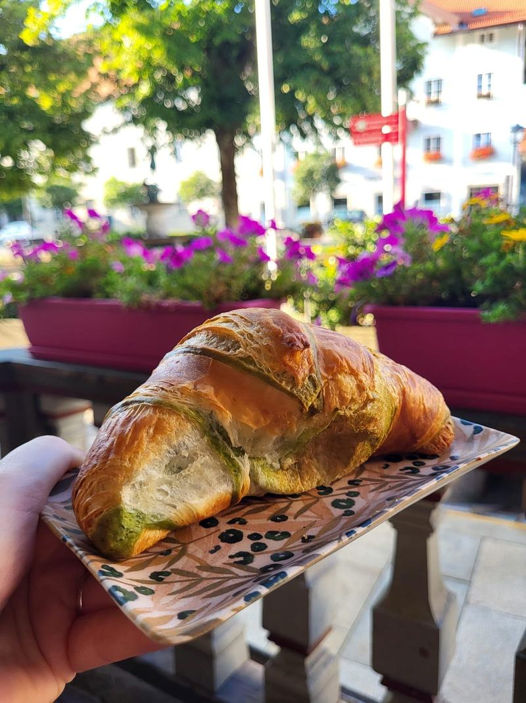

The café on the main square in Miesbach
Good coffee, a generously laid breakfast table and a comfortable spot to linger.

Stadtplatz 1
83714 Miesbach
08025 9924355
Menu
Everything fresh, much of it homemade.
Winter menu
For a short time only.
- [Placeholder] Winter menu dish0,00 €
[Placeholder] description
Breakfast
- Süßer Start a, g3,90 €
butter croissant with homemade fruit spread
- Müsli Bircher Art a, g, h6,90 €
homemade bircher muesli with fruit topping & granola
- herzhaftes a, g, c, d9,90 €
the savoury one: ham, salami, cheese & butter, served with a bread basket
- Lieblingsbowl a, e, h9,90 €
- Avocado Royal a, g, c, d14,50 €
crisply toasted spelt and rye malt bread with grainy cream cheese, cocktail tomatoes, rocket, avocado, 2 fried or scrambled eggs and a balsamic topping
- + ham2,00 €
- + salmon3,50 €
- + freshly squeezed orange juice4,20 €
- Gönnerbrunch a, g, c, d15,90 €
a selection of ham, salami and cheese, spread of the day, soft-boiled egg, homemade fruit spread & butter, served with a bread basket
- Vegetarisch a, g, c, d18,90 €
the vegetarian one: a selection of cheese, muesli, spread of the day, tomato and mozzarella, soft-boiled egg, homemade fruit spread & butter, served with a bread basket
- Frühstück für zwei a, g, c, d27,90 €
breakfast for two: ham, salami, a selection of cheese, 2 soft-boiled eggs, 2 bircher mueslis, spread of the day, homemade fruit spread & butter, served with a bread basket
Ei love eggs a, c
- soft-boiled egg2,50 €
- scrambled eggs (3 eggs) or fried eggs (2 eggs)5,90 € / 4,70 €
- scrambled eggs with tomatoes6,60 €
- scrambled eggs with ham7,60 €
- scrambled eggs with tomatoes & ham8,60 €
Extras
- fruit spread / honey / Nutella h, f / date curry dip a, g each1,40 €
- butter a, g1,00 €
- portion of ham4,20 €
- smoked salmon d with horseradish5,20 €
- wheat roll1,20 €
- pretzel1,50 €
- wholegrain spelt roll1,50 €
- croissant2,50 €
Coffee & co.
- Espresso 72,20 €
- Doppio 73,90 €
- Espresso Macchiato 7, g3,20 €
- Cappuccino small 7, g3,80 €
- Cappuccino large 7, g4,80 €
- Latte Macchiato 7, g4,80 €
- white coffee 7, g4,80 €
- coffee, cup3,50 €
- coffee, large mug4,50 €
- Chai Latte 7, 12, g, m5,90 €
- Matcha Latte 7, 12, g, u6,90 €
- children's cappuccino g1,00 €
- hot chocolate g4,80 €
- Bioteaque tea, 0.5 l4,90 €
herbal, fruit, black or green tea
Oat milk + 0.80 €
Drinks
- still water 0.4 l3,20 €
- sparkling water 0.4 l3,20 €
- juices 0.4 l4,60 €
apple, blackcurrant 13, passion fruit, orange, rhubarb
- juice with sparkling water 0.4 l4,60 €
apple, blackcurrant, passion fruit, orange, rhubarb, elderflower
If we're rushed off our feet, please just come to the counter. We're still happy to help and will bring your order to your table!
If you have an allergy, please ask us – we're happy to check for you.
All prices in euros, including VAT. Subject to change.
Allergens and additives
Traces and cross-contamination cannot be ruled out.
Allergens
- a
- cereals containing gluten
- b
- crustaceans and products thereof
- c
- eggs and products thereof
- d
- fish and products thereof
- e
- peanuts and products thereof
- f
- soybeans and products thereof
- g
- milk and products thereof
- h
- nuts
- i
- celery and products thereof
- j
- mustard and products thereof
- k
- sesame seeds and products thereof
- l
- sulphur dioxide and sulphites
- m
- lupin and products thereof
- n
- molluscs and products thereof
- u
- [placeholder – meaning to be added]
Additives
- 1
- preservative
- 2
- with colouring
- 3
- with antioxidant
- 4
- with phosphate
- 7
- contains caffeine
- 8
- with flavour enhancer
- 9
- blackened
- 10
- waxed
- 11
- with taurine
- 12
- with sweeteners
- 13
- with nitrate
Book a table
Just give us a quick call – we'll find you a table. Best by phone during our opening hours, or send us a message on Instagram.
Opening hours
| Monday | closed |
|---|---|
| Tuesday – Friday | 8:00 – 17:00 |
| Saturday | 8:30 – 17:00 |
| Sunday / public holidays | 8:30 – 17:00 |
Find us
b.ellersStadtplatz 1
83714 Miesbach
Right on Miesbach's main square.
The map comes from OpenStreetMap. It only loads when you ask for it – your IP address is then sent to OpenStreetMap.
Gallery
There are more on Instagram.


Celebrate at b.ellers
From a small birthday coffee to a big party – just ask us.
Something to celebrate? Just tell us what you have in mind and we will work out together how to make it lovely. Coffee and cake for ten, or the whole café to yourselves: talk to us and we will find a way.
- Ask Call us, send an email or write on Instagram – with the occasion, the date and roughly how many of you there will be.
- Arrange We take the time to discuss what you would like to eat and drink, how much room you need and what it will cost.
- Celebrate You arrive, everything is ready – and we take care of the rest.
Occasions we are glad to host
- Birthdays
- From a milestone birthday to a children's party – with cake, gateau or breakfast.
- Hen & stag parties
- An easy start to the day or a comfortable break in between – without any rush.
- Confirmation & communion
- A festive setting for the family after the church service, with breakfast or lunch.
- Mother's & Father's Day
- Book a table for the whole family, or have something special prepared.
- And anything else
- Christenings, anniversaries, company parties, club meetings, a wake – just ask, we will fit around you.
Gift vouchers
Give a little bit of b.ellers.
A voucher from us is an invitation: to a breakfast without watching the clock, to a slice of cake in the afternoon, or simply to a good coffee in the middle of the town square.
Just let us know – it will be waiting for you at the counter.
- Amount
- whatever you like
- Valid for
- everything on our menu
- Available
- at the café on the Stadtplatz
- Order ahead
- by phone or email, pick-up at the counter
We are looking for you!
Service staff / kitchen staff / barista (m/f/d)
- Hours
- mini-job or part-time
- Age
- 18 and over
- Start
- by arrangement
Interested? Then we would be glad to hear from you – a short introduction and how to reach you is enough.
What you bring
- Reliability and a sense of responsibility
- A friendly manner and a feel for teamwork
- Motivation and a genuine liking for hospitality
- Experience in service, in the kitchen or behind the coffee machine is a plus – but not a must, we will show you everything
What you would do
- Looking after our guests and waiting tables
- Making coffee and other drinks
- Helping out in the kitchen
- Getting your area ready and clearing it afterwards
- Keeping to our hygiene and quality standards
What we offer
- Fair pay
- Flexible hours by arrangement
- A pleasant atmosphere in a motivated team
Contact
- Phone08025 9924355
- Emailinfo@bellers-cafe.de
- Instagram@b.ellers_cafe
- AddressStadtplatz 1, 83714 Miesbach